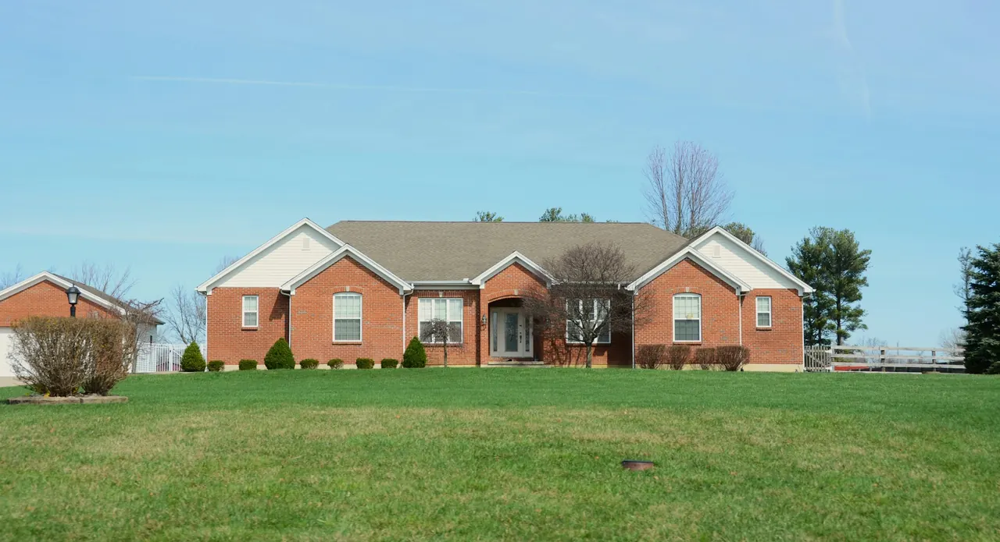
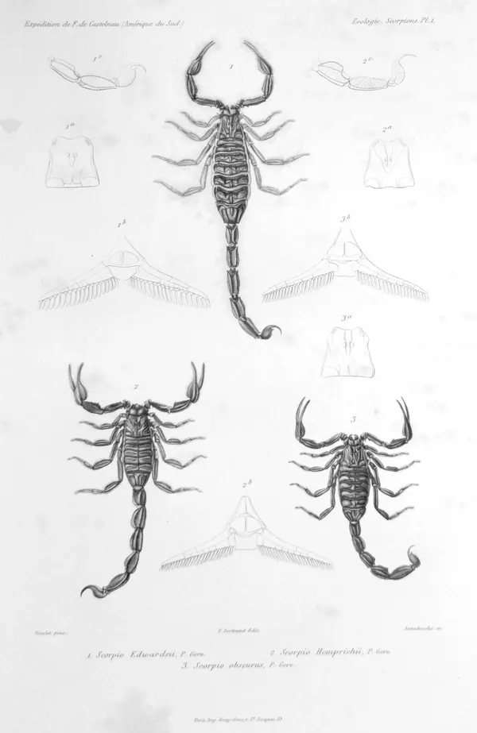
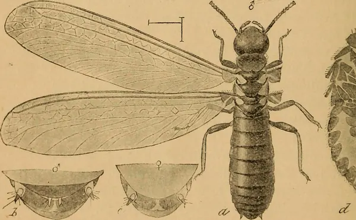
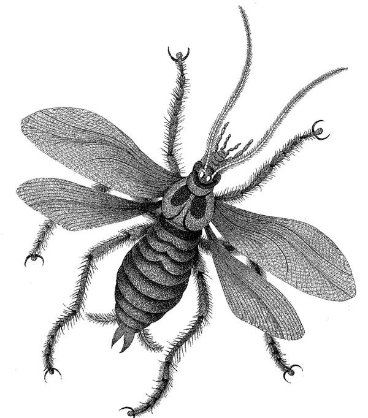

Essential
from $39/mo Sample
Quarterly general pest service: exterior perimeter, eaves and entry points, interior when needed. Free re-service between visits.
A field guide for Denton County homes
Fire ants, scorpions, termites and mosquitoes are all part of life in Denton County. We inspect first, fix entry points and moisture, and treat only where needed.

Eight pests we see around North Texas homes, with old specimen plates and plain notes on how to tell them apart.

Small reddish-brown ants that build loose dirt mounds in lawns, often after rain. Disturb a mound and many workers come out quickly to sting. Stings often turn into small itchy blisters a day or two later.

The striped bark scorpion is the scorpion you'll find around Denton: about 2½ inches long, tan, with two dark stripes down its back. It hunts at night and hides under rocks, boards and debris by day. In hot weather it can wander indoors from attics.

Termites live in the soil and travel into homes through thin mud tubes built up foundation walls. The first sign most homeowners notice is a spring swarm of small winged insects, or piles of discarded wings, near windows and doors.

Two kinds matter most around Denton homes. Southern house mosquitoes breed in standing water such as ditches, drains and birdbaths and bite from dusk through the night. Asian tiger mosquitoes breed in small containers like flowerpots and clogged gutters and also bite during the day.

German cockroaches are small, light brown roaches with two dark stripes behind the head that live indoors near kitchens and bathrooms. American cockroaches are much larger and reddish-brown, live mostly outdoors and in drains, and wander inside looking for water.

Roof rats are climbers that nest up high in trees, vines and attics, so scratching overhead at night is often the first clue. House mice are much smaller and can slip through a gap the size of a dime.

Bed bugs are flat, wingless, reddish-brown insects about the size of an apple seed. They hide in mattress seams, headboards and nearby furniture during the day, and most people pick them up while traveling.
A shy, brownish spider with a body ¼ to ½ inch long that hides in closets, boxes, garages and woodpiles. It is most active at night and outdoors from spring through fall. Bites are usually accidental, when one is pressed against skin in stored clothing or bedding.

A note on scorpions
The striped bark scorpion is the only one of Texas's 18 scorpion species found throughout the state.
Scorpions are hard to control with insecticides alone, so sealing gaps and clearing debris come first. That is where our inspection starts.
Get a free pest inspectionPrices published up front. Quarterly service at the base, then termite and mosquito care as you need them.
from $39/mo Sample
Quarterly general pest service: exterior perimeter, eaves and entry points, interior when needed. Free re-service between visits.
from $69/mo Sample
Everything in Essential, plus termite protection with warranty terms in writing.
from $119/mo Sample
Everything in Plus, plus seasonal mosquito treatments.
For buyers, sellers and real estate agents.
Reports in a Texas real estate transaction must be on the Texas Department of Agriculture form: the Official Texas Wood Destroying Insect Report, form SPCS/T-5. A lender may ask for its own form too. That form is in addition to the Texas form, not instead of it.
Four steps, the same order every time.
I.
We inspect first, then fix entry points and moisture.
II.
We treat only where needed. Licensed applicators who follow every product label.
III.
We'll tell you which products we used and how long to keep kids and pets off treated areas.
IV.
If pests come back between scheduled visits, so do we, at no charge (sample).

Ask us for the product label, or call the National Pesticide Information Center at 1-800-858-7378.
For businesses: we provide the required TDA consumer information sheet and 48-hour notice signs for apartments, offices and schools. (sample)
Free re-service between scheduled visits. If pests come back, so do we.
Sample
Sample reviews for this demo. Your real customer reviews go here.
Sample review
The tech walked the whole house with me, showed me what he found by the back door and told me what to watch for. No pressure to add anything.
Maria, Corinth
Sample review
We were finding scorpions in the garage every week. After the first visit we stopped seeing them, and when one turned up later they came back out for free.
James, Argyle
Sample review
On time, with a text the day before. Easy to plan around work, and they explained the fire ant treatment in plain English.
Daniel, Lewisville
Based in Denton, TX, and serving these seven cities.
Prefer the phone? (940) 555-0187 Sample
Field report, No. 001
Tell us what you're seeing and where.